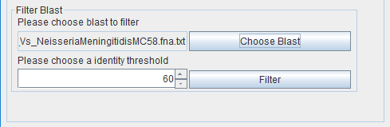

File menu
In this menu the user have two choices, create a new project or open an existing one.
New project
By clicking new project in the File menu, a window will appear that has to be filled with a name of the user choice (do not use spaces). In our example, "nelongata0” project was used.
 |
 |
Following this, a directory will be created to store all information. This directory is composed of five folders: Blast, Fasta, Filtered, Graphs and Results in the path /caprib/project/nelongata0/
 |
 |
A new window will appear to start blast and to filter the blast reports. Of note, all created files (fasta, blast and filtered files) will be saved in their respective folders.
Open Project
This option is used when the user have other analysis to do on an existing project.
Then, the user can choose the existing project.
Blast & Filter
To start the blast, the user will need input files: the protein fasta file and the feature file for the reference organism. Neisseria elongata is used in our example. The files are provided for training purposes in the tutorial folder named respectively:
-GCF_000818035.1_ASM81803v1_protein.faa
-GCF_000818035.1_ASM81803v1_feature_table.txt
For other reference organisms these files (.faa and _feature_table.txt) are generally available on the NCBI FTP: (ftp://ftp.ncbi.nlm.nih.gov/genomes/refseq/bacteria/). The third output file needed is the gDNA sequence (.dna) as a fasta files for the other organism that will be compared(herein Kingella denitrificans) with the reference. This file can also be found in the NCBI FTP. The user can choose the expect (E) value (for explanation on this value see: https://blast.ncbi.nlm.nih.gov/Blast.cgi?CMD=Web&PAGE_TYPE=BlastDocs&DOC_TYPE=FAQ#expect). It is expressed in e^(value enter by the user). By clicking “Blast” the tbalstn analyses will start.
The report of these analyses is stored in the Blast folder.
Blast |
 |
Filter |
 |
The user must do this operation for all genomes that will be compared with the reference. At this point, the user can filter the blast results (---vs---.txt in the “blast” folder) separately to exclude non-conserved proteins if needed. The % of identity score threshold is chose by the user. A threshold of 0% will include all proteins and threshold could be defined latter. Again, this operation needs to be done for all genomes. The output created file will be stored in the “Filtered” folder.